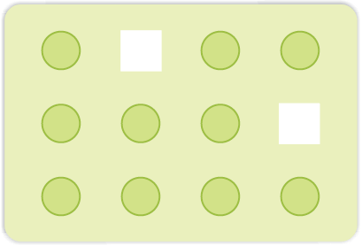
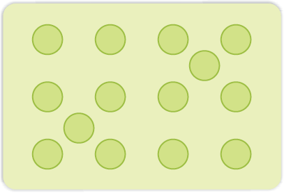
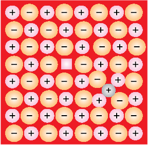
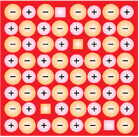
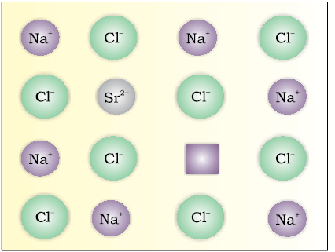
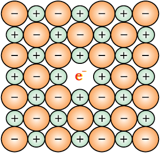

Although crystalline solids have short range as well as long range order in the arrangement of their constituent particles, yet crystals are not perfect. Usually a solid consists of an aggregate of large number of small crystals. These small crystals have defects in them. This happens when crystallisation process occurs at fast or moderate rate. Single crystals are formed when the process of crystallisation occurs at extremely slow rate. Even these crystals are not free of defects. The defects are basically irregularities in the arrangement of constituent particles. Broadly speaking, the defects are of two types, namely, point defects and line defects. Point defects are the irregularities or deviations from ideal arrangement around a point or an atom in a crystalline substance, whereas the line defects are the irregularities or deviations from ideal arrangement in entire rows of lattice points. These irregularities are called crystal defects. We shall confine our discussion to point defects only.
Point defects can be classified into three types : (i) Stoichiometric defects (ii) Impurity defects and (iii) Non-stoichiometric defects.
These are the point defects that do not disturb the stoichiometry of the solid. They are also called intrinsic or thermodynamic defects. Basically these are of two types, vacancy defects and interstitial defects.
(i) Vacancy Defect: When some of the lattice sites are vacant, the crystal is said to have vacancy defect. This results in decrease in density of the substance. This defect can also develop when a substance is heated.
(ii) Interstitial Defect: When some constituent particles (atoms or molecules) occupy an interstitial site, the crystal is said to have interstitial defect. This defect increases the density of the substance.
Vacancy and interstitial defects as explained above can be shown by non-ionic solids. Ionic solids must always maintain electrical neutrality. Rather than simple vacancy or interstitial defects, they show these defects as Frenkel and Schottky defects.

Vacancy defects

Interstitial defects
(iii) Frenkel Defect: This defect is shown by ionic solids. The smaller ion (usually cation) is dislocated from its normal site to an interstitial site. It creates a vacancy defect at its original site and an interstitial defect at its new location.
Frenkel defect is also called dislocation defect. It does not change the density of the solid. Frenkel defect is shown by ionic substance in which there is a large difference in the size of ions, for example, ZnS, AgCl, AgBr and AgI due to small size of Zn2+ and Ag+ ions.
(iv) Schottky Defect: It is basically a vacancy defect in ionic solids. In order to maintain electrical neutrality, the number of missing cations and anions are equal.
Like simple vacancy defect, Schottky defect also decreases the density of the substance. Number of such defects in ionic solids is quite significant. For example, in NaCl there are approximately 106 Schottky pairs per cm3 at room temperature. In 1 cm3 there are about 1022 ions. Thus, there is one Schottky defect per 1016 ions. Schottky defect is shown by ionic substances in which the cation and anion are of almost similar sizes. For example, NaCl, KCl, CsCl and AgBr. It may be noted that AgBr shows both, Frenkel as well as Schottky defects.
If molten NaCl containing a little amount of SrCl2 is crystallised, some of the sites of Na+ ions are occupied by Sr2+. Each Sr2+ replaces two Na+ ions. It occupies the site of one ion and the other site remains vacant. The cationic vacancies thus produced are equal in number to that of Sr2+ ions. Another similar example is the solid solution of CdCl2 and AgCl.
 
Frenkel defects and Schottky defects

Introduction of cation vacancy in NaCl by substitution of Na+ by Sr2+
The defects discussed so far do not disturb the stoichiometry of the crystalline substance. However, a large number of non-stoichiometric inorganic solids are known which contain the constituent elements in non-stoichiometric ratio due to defects in their crystal structures. These defects are of two types: (i) metal excess defect and (ii) metal deficiency defect.
(i) Metal Excess Defect
Now there is excess of zinc in the crystal and its formula becomes Zn1+xO. The excess Zn2+ ions move to interstitial sites and the electrons to neighbouring interstitial sites.
(ii) Metal Deficiency Defect
There are many solids which are difficult to prepare in the stoichiometric composition and contain less amount of the metal as compared to the stoichiometric proportion. A typical example of this type is FeO which is mostly found with a composition of Fe0.95O. It may actually range from Fe0.93O to Fe0.96O. In crystals of FeO some Fe2+ cations are missing and the loss of positive charge is made up by the presence of required number of Fe3+ ions.

An F-centre in a crystal